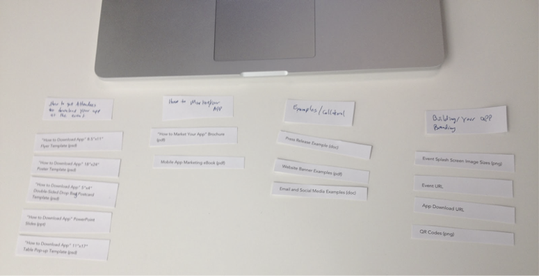
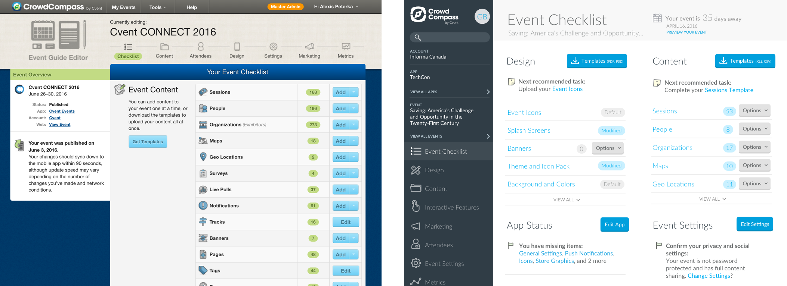
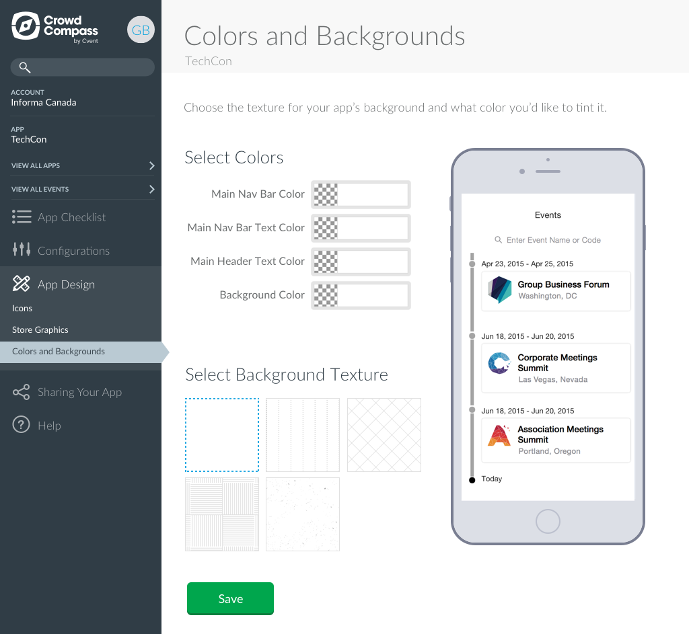

EventCenter Redesign, 2015-2016
Skills
- Customer interviews
- Surveys
- Design studios
- Usability testing
- Wireframing
- Web UI design
- Icon design
Tools
- WebEx
- Typeform
- Google Analytics
- Sketch
- Adobe Illustrator
- InVision
Artifacts
- Stakeholder presentations
- Content maps
- User flows
- Mockups
- Interactive prototypes
- Icon SVGs
Problem
Visually, our customer-focused CMS (the EventCenter) needed to be brought up-to-date to feel more consistent with the Cvent suite of products. More functionally, we wanted to move away from a model where much of this work was done by internal resources (customer support staff, account managers) to a self-service model, but our customers found the EventCenter too difficult to use to make that transition.

Solution
We ran benchmark usability testing on key areas of the EventCenter to evaluate where customers struggle with core functionality, and I conducted one-on-one customer interviews to identify major pain points that cause our customers to abandon the process and increase support costs and churn. Once I identified these major themes (lack of onboarding, confusing navigation hierarchy, lack of notifications when something is wrong, user flow "dead ends"), I worked closely with Product Management to group these into attainable units of work.

Result
Although we wanted to fully re-architect the EventCenter, after talking with our technical experts, found that would take more time than we had to complete the project. Fortunately, since I’d researched and identified the major themes that needed improvement, we helped the team reset the scope of work to focus on the most impactful changes in a limited amount of time. With these problem areas in mind, we effectively addressed the most significant customer pain points to the satisfaction of the customer support and account management staff.
